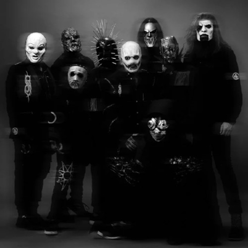

Slipknot es una banda estadounidense de metal alternativo formada en 1995 en Des Moines, Iowa, Estados Unidos. Sus integrantes en la actualidad son Corey Taylor, Craig Jones, Jim Root, Mick Thomson, Shawn Crahan y Sid Wilson. Slipknot es conocida por las máscaras características de cada uno de sus miembros, que cambian conforme han sacado más discografía
Periodo de actividad: 1995-presente
Canción más popular: Psychosocial
Se la dejamos a continuacion por si desea escucharla dandole al boton play:
En el recorrido podemos observar a la izquierda del camino una vitrina en la que se encuentran exibidas todas las mascaras que uso la banda a lo largo de su carrera como banda